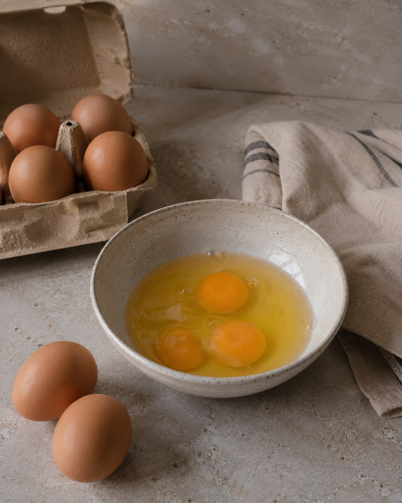
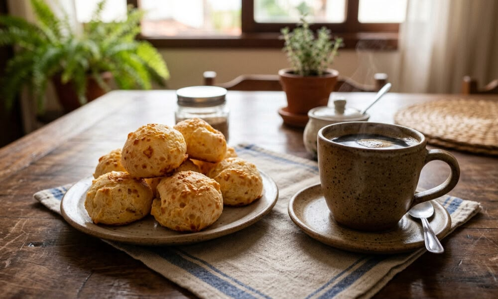

Cassava starch

01
Gluten-free base
Cassava starch
Naturally gluten-free, it's the heart of authentic pão de queijo — a clean, simple foundation with nothing to hide.
Naturally gluten-freeReal ingredients, thoughtfully chosen. No fillers, no artificial preservatives — just the simple, nourishing things that make comfort food worth sharing.
Naturally gluten-free, it's the heart of authentic pão de queijo — a clean, simple foundation with nothing to hide.
Naturally gluten-free
Grass-fed cheddar & parmesan give every bite its rich, golden, comforting flavor — the kind you can taste.
Grass-fed cheddar & parmesan
Simple, nourishing ingredients you can actually recognize — nothing more than what real food calls for.
Organic
A cleaner choice for everyday comfort food — organic, and chosen with the same care as everything else.
Organic olive oil
Just real ingredients, thoughtfully made and small-batch crafted — the way comfort food was always meant to be.
Small-batch crafted
Brazilian cheese bread, made for the way you eat today — comfort food, thoughtfully made.
Shop the collection